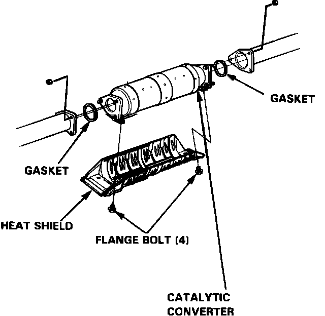

Catalytic Converter: Testing and Inspection
Three-Way Catalytic Converter (TWC):

Fig. 33 Three-Way Catalytic Converter Exploded View:

If excessive exhaust system back pressure is suspected, remove the catalytic converter from the car, and make a visual inspection for plugging, melting, or cracking of the catalyst. Replace the catalytic converter if any of the visible area is damaged or plugged.